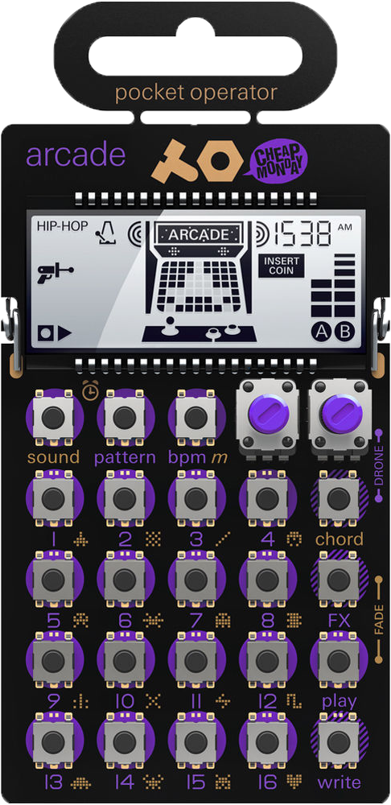

Tips
Bit-sized tricks to get the most out of the PO-20.
- Make a simple riff and then copy it to a new pattern and elaborate, adding some other sounds to make it more complex.
- Alternatively, make several patterns that are similar and can be played one after the other, as the chords change.
- I like to use a blank pattern to plan out chord progressions before I start adding sounds. This way, the chords are defined and it's easier to pick notes that go well with the chords.
- You've probably noticed that some of the sounds change pitch with the chords and others stay the same regardless. I like to use some of both for variety.
- Many of the sounds can become very subtle if you hold "write" and turn the right knob all the way down as its playing. I like using these subtle sounds to build quieter riffs.
- The PO-20 effects function differently than the other pocket operators. I find it's harder to get really weird sounds out of the 20, as compared to the 12 and 14. It is much easier, however, to make pleasant melodic tunes.
- I tend to leave the drum sounds to the PO-12, but if you only have the 20, it has some basic drum abilities that can be made quite interesting using the parameter locking.
- Holding a step button and hitting "bpm" adds a retrig effect to that step. Drum beats and melodies alike can be made quite cool using this feature.
Tutorials
Learn how to use the PO-20
Examples
Listen to what other musicians have been able to do with the PO-20
